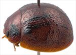
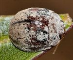
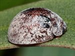
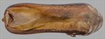
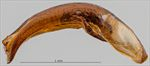
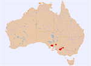

Click on images to enlarge


Female, Murrayville, Victoria


Male, Cowell, Eyre Peninsula, South Australia


Female, Peterborough, South Australia


Aedeagus, dorsal view (Cowell, Eyre Peninsula, South Australia)


Aedeagus, lateral view (Cowell, Eyre Peninsula, South Australia)


Distribution
Name
Trachymela sp. Ta120
Reference specimen
2004-424, Pinaroo, South Australia.
Adult Description
Length: ♂ 5.0–6.0 mm (n=10), ♀ 5.2–6.2 mm (n=15).
Colouration:
- Head: uniformly light- to mid-brown with dark-brown or black-tipped mandibles; labrum straw-brown; antennomeres straw-brown, usually uniformly so, sometimes with distal antennomeres (more often only their distal extremity) fractionally darker.
- Pronotum: brown, concolorous with head, usually with a black macula present behind each eye, varying from a small round spot at centre of foveal depression to a large, quadrate mark extending from near anterior edge to close to posterior edge of pronotum and occupying all of foveal depression, in some specimens these maculae are completely absent.
- Scutellum: brown, concolorous with pronotum, often broadly edged in a slightly darker shade.
- Elytra: brown, concolorous with or fractionally darker than pronotum, a black, roughly quadrate patch is present adjacent to anterior edge and extending posteriorly to anterior edge of antero-median depression, lateral extent is from (and including) humeral callus to about halfway to elytral suture (often terminating an elevated ridge), sometimes this patch is partially fragmented, only very rarely is it absent or barely darker than substrate, elytral suture between elytral summit and apex is usually broadly edged in black, the disc is scattered with small, wart-like elevations that are very slightly to considerably darker than surrounding area and quite evenly distributed with no concentration of these behind depression, sometimes some of these align in longitudinal series; punctures are concolorous with, rarely fractionally darker than interstices.
- Venter & Legs: light- to mid-brown with legs of a similar shade, inner thoracic ventrites sometimes slightly darker, inside surface of elytral epipleura brown, rarely fractionally darker (never black) in posterior half.
- Cuticular Wax: quite thick and relatively even layer of greyish wax, tending to brown towards posterior of elytra in some specimens.
Morphology:
- Head: punctures moderately large (pd ≈ 1.5–2× ef) and quite evenly and quite densely distributed. Antennae short, particularly in females (AL/BL: ♂ 38–41%, ♀ 31–32%), filiform.
- Pronotum: almost evenly curved transversely, foveal depression absent or exceedingly shallow with epidermis usually elevated in a rounded pustule near its centre, discal area with surface usually smooth, rarely slightly uneven, puncturation clearly impressed, evenly distributed and quite dense (spacing ≈ 1.5–2.5 pd), becoming much coarser at lateral margins, some much finer punctures are scattered among the larger ones. Front margins join lateral margins in a smoothly rounded right-angle, with lateral margin initially straight before curving smoothly and gradually towards rear margin.
- Scutellum: punctured throughout, with punctures concolorous with or slightly finer than those on adjacent area of pronotum.
- Elytra: surface slightly unevenly curved with a broad but very shallow depression extending from just below elytral summit towards the discal margin, punctures mostly distinct and relatively large, closely spaced and evenly distributed over anterior two-thirds of surface, surface more granular in posterior third, with much smaller punctures scattered on the interstices, a number of small elevated, usually dark verrucae are present, these may be relatively evenly scattered over all of disc except antero-median depression or more clustered, often with a denser grouping around the elytral summit, sometimes with verrucae aligning in 2–3 longitudinal rows, surface continuous under humeral callus. Vertical extension of epipleura considerable (HCE/PW = 0.39–0.42).
- Venter: prosternal process with sides almost parallel, closed anteriorly, a scatter of long setae present along prosternal process and on mesoventrite, a single seta each on anterior, median and posterior trochanters; front edge of metaventrite beveled, slightly rounded; inner edge of posterior of epipleura with scattered, short setae, rarely completely lacking setae.
Male Genitalia (Aedeagus):
- Dimensions: moderate in length (LPE/BL = 28–33%).
- Dorsal view: sides of shaft smoothly sinuate, broadest at basal sulcus, converging towards narrowest point about centre and then broadening again until about centre of ostial opening, from where sides converge in a smooth arc towards apex with the angle of convergence becoming sharper shortly before apex, dorsal surface smoothly curved with dorso-median channel absent, dorsolateral channels well-defined and converging slightly towards rear, tip protruding only slightly, ostium relatively large with dorsal ostial processes oblique and creating a triangular space at rear, a line of relatively long setae along anterior edge.
- Lateral view: shaft curved slightly near basal sulcus, then ventral surface almost imperceptibly and evenly curved towards apex before curving downwards noticeably at about 15% of distance from apex, tip small and slightly deflexed.
Immature Stages
Unknown.
Similar species
- Ta174: the cuticular wax of Ta174 consists of two different shades, with a paler shade of brown (sometimes even grey) in the anterior third of the insect contrasting clearly with the darker shade in the posterior two-thirds. Otherwise, there is little to distinguish this species from Ta120. They are similar in size. Ta174 tends to have a rougher elytral surface, with verrucae tending to be more densely distributed, coarser and often with a concentration of them behind the antero-median depression. The black colouration adjacent to the humeral callus is always fragmented in Ta174 and does not join with the humeral callus. Another difference is the colour of the inner surface of the elytral epipleura – in Ta174 these are at least partially dark brown or even black in the posterior half. The aedeagi of the two species are almost identical in shape, but in Ta174 the ostial processes are parallel to each other rather than diverging to form a triangular space between them as they do in Ta120. The aedeagus of Ta174 as a proportion of body length is longer than that of Ta120.
- Ta159: another species very similar in external morphology to Ta120. The pronotum of Ta159 almost always has a large black mark covering much of the foveal area. The verrucae on the elytral disc tend to be more densely distributed and are sometimes quite concentrated behind the antero-median depression, rarely almost forming an interrupted ridge. The posterior half of elytral suture, if black, is only very narrowly so, never broadly black as is frequently the case with Ta120. The aedeagus of Ta159 is short and parallel-sided.
- Ta161: specimens of this species are smaller than those of Ta120, with the size range only barely overlapping. Though often having a similar pattern of dark markings dorsally, the black patch in the area between the humeral callus and scutellum is usually not (or only lightly) connected to the black area on the humeral callus. The verrucae on the elytral disc tend to be more concentrated in the posterior third, while the posterior half of the elytral suture is black in only a rare few specimens of Ta161. The thoracic ventrites of Ta161, especially those of the mesothorax, are dark brown. The sides of the aedeagus of Ta161 are much less sinuate than that of Ta120, and its length is usually less than 29% of body length.
- Ta06: quite similar in general appearance and size, though having a very different (lanceolate) aedeagus and lacking setae at the posterior of epipleura.
Notes
- Taxonomy: This is one of the many closely related species of small Trachymela found in the mallee regions of southern Australia, and is possibly the same species as T. adelaidae (Blackburn).
- Morphological Variation: Three female specimens from Peterborough are intermediate in characters between Ta120 and Ta159. One of the specimens [2017-191] has the large quadrate black macula in the humeral area, as well as the elytral suture black in the posterior third. In specimen [2017-192] from the same location, the quadrate elytral macula is more fragmented and the posterior third of elytral suture is not at all edged in black. Both these specimens have a large black macula in the foveal area of pronotum. A third specimen [2017-194] from a nearby location possesses the solid humeral black macula but lacks any black on the pronotum, its elytral suture is only very finely edged in black posteriorly. All three specimens have the small verrucae in the posterior half of the elytra roughly aligned in linear series. On balance, these are most likely to be Ta120.
- Distribution & Host Associations: Ta120 has been collected from mallee eucalypts from the mallee regions of western Victoria to as far west as the eastern Eyre Peninsula. The only record with identified host is from Peterborough, where two specimens were caught off Eucalyptus dumosa (Symphomyrtus : Dumaria, series Rufispermae).
Copyright © 2026. All rights reserved.